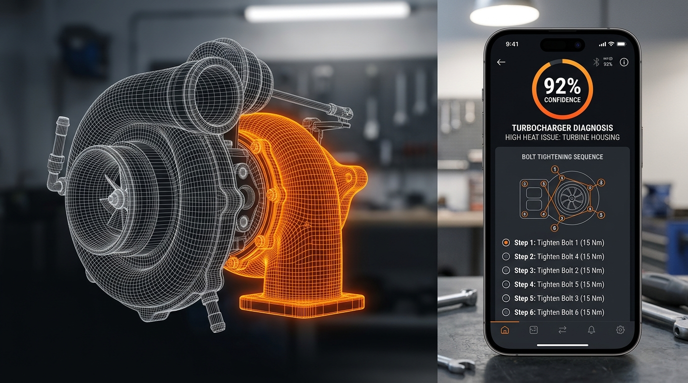
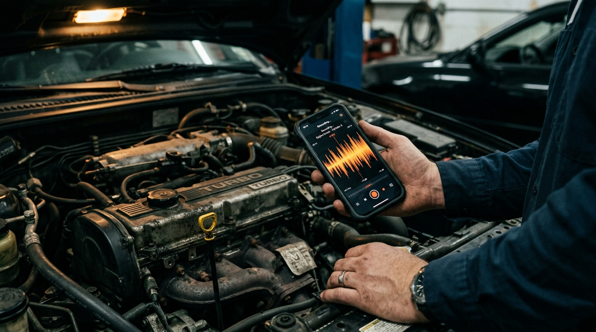
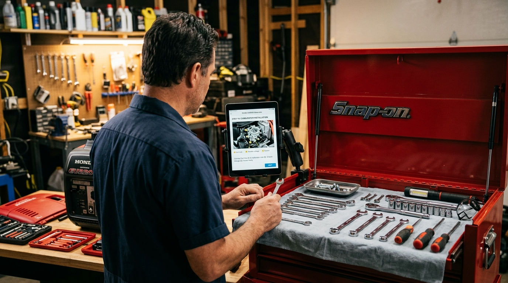
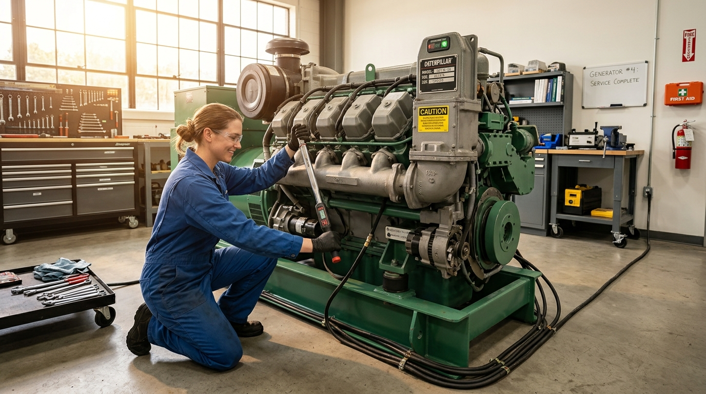

Record the noise. Upload the photo. Get the fix.
Listen & Fix hears engine knocks, sees frayed wires, and cross-references your exact make and model against real service manuals — then hands you a step-by-step repair guide calibrated to your skill level.
No credit card. No account required. First 500 users get unlimited free diagnoses.

The weird knock at 3,000 RPM. The appliance that cycles but doesn't cool. The HVAC that runs all night and still doesn't reach temperature. You're not guessing about whether there's a problem — you're guessing about what it is.
"Even a high-performance AI knows how internal combustion works — but it doesn't have every specific shop manual for every machine ever built memorized. RAG is the process of putting that service manual into the AI's hands the moment the machine rolls onto the lift."
Listen & Fix is the master technician in your pocket — one that arrives already holding the factory manual for your specific serial number.
No setup. No account. Just capture the symptom and let the pipeline do its work.
Record audio of the knock, whine, or rattle. Upload a photo of the leak, the burn mark, or the worn belt. Or drop in a video clip. The system handles everything up to 2GB.

While you finish filling in the model number, the Scout is already crawling iFixit, NHTSA, and RepairPal for your exact machine. The Librarian indexes every torque spec and safety warning before the diagnosis begins.
A structured repair guide arrives — calibrated to your skill level, with exact part numbers, local sourcing, and step-by-step instructions that actually match your machine's serial number.

From a 2008 F-150 to an industrial backup generator. Our pipeline is calibrated across four core high-precision sectors.

Most AI tools carry the general knowledge of a master mechanic who's read every textbook. That's useful — but it won't tell you the exact torque spec for a 2018 Camry's cylinder head, or the clearance tolerance for your specific industrial generator's impeller bearing.
Our Retrieval-Augmented Generation (RAG) pipeline solves this. The moment you tell us what you're working on, a specialized pit crew fires up in the background and builds a custom technical library — just for your machine, just for this job.
A 10-second audio clip of a high-pitched whine from an industrial generator. Here's what the system returns.
Join the waitlist. Get early access to free unlimited diagnoses and be first on the lift when we launch.
First 500 users: unlimited free diagnoses at launch. No spam. Unsubscribe anytime.